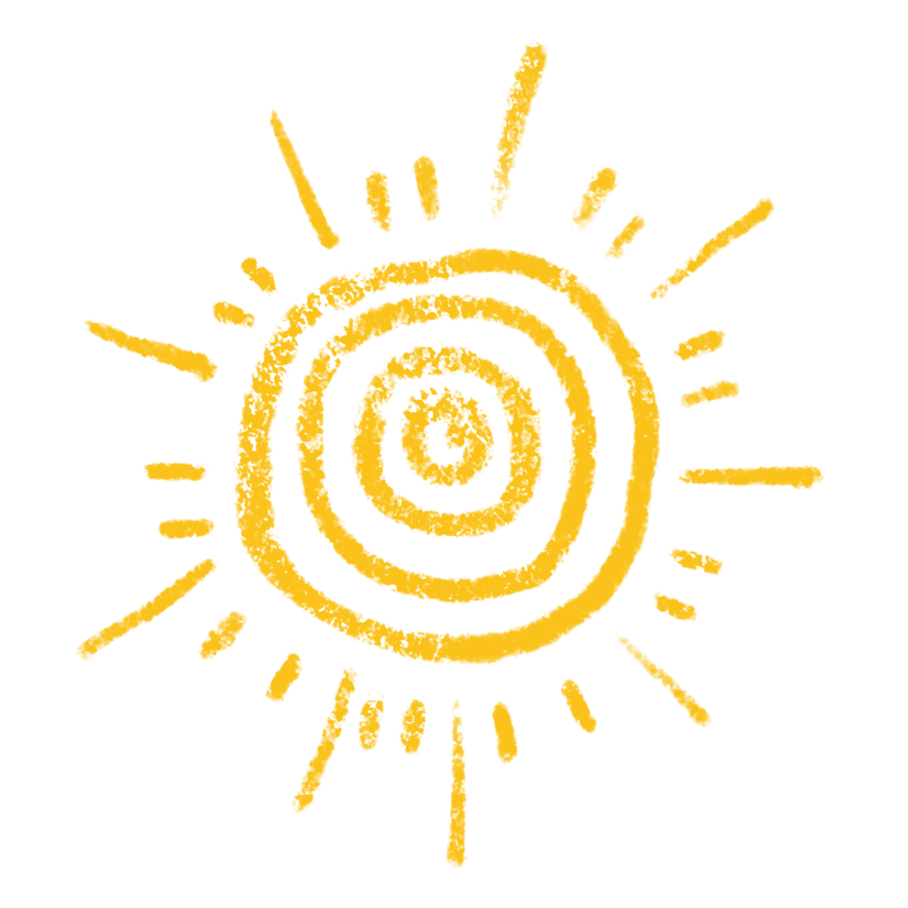
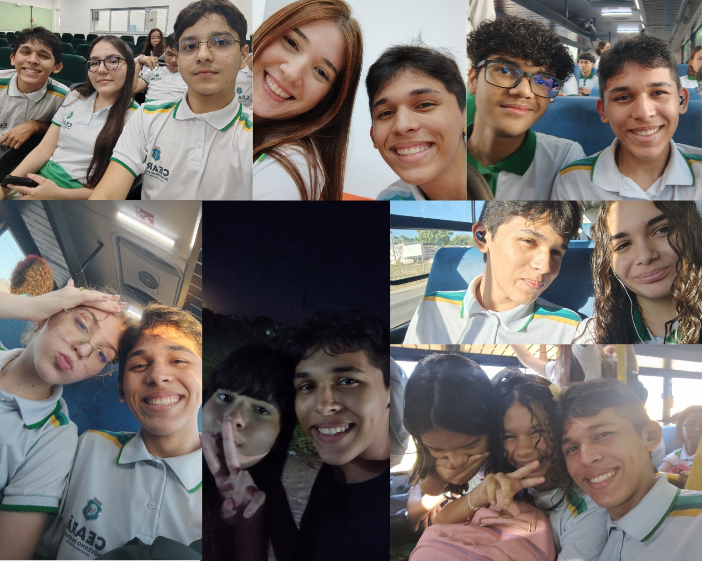

Sobre mim
Esta parte foi pensada para contar minha trajetória até que chegasse a fazer este site.

Sou estudante do ensino médio e faço um curso na área de informática. Minha trajetória com a tecnologia começou pela curiosidade, e essa, despertou-se na minha primeira vez assistindo a um canal de gadgets chamado "Coisa de Nerd".
Ao longo dos estudos, percebi o quão fluida é a programação e as diferentes formas de construir projetos como este. HTML e CSS foram muito transformadoras para entender como uma página é estruturada e como suas partes podem ganhar identidade visual, o que desde a minha infância foi uma grande indagação. Também venho trabalhando resolução de problemas através de lógica de programação, principalmente na linguagem PHP.
Atualmente, meu objetivo é continuar aprendendo e construir uma base cada vez mais sólida em tecnologia. Quero usar os estudos e os projetos para descobrir quais áreas despertam mais meu interesse e, no futuro, transformar esse conhecimento em projetos cada vez mais completos. Ou seja, este projeto só tende a evoluir...
Meus amigos
Estas são algumas pessoas que fazem parte da minha trajetória e dos momentos que vivi durante essa caminhada.
